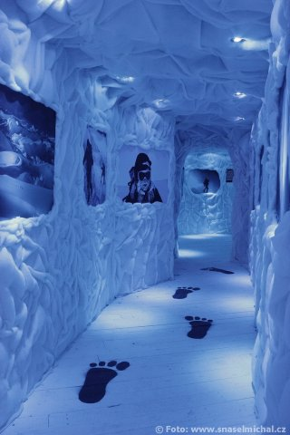
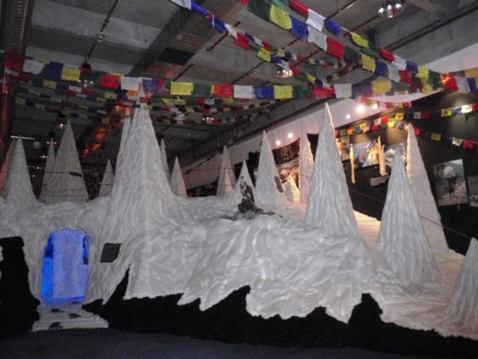
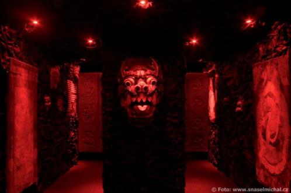

Včera jsem strávila odpoledne v Asii :-)…zjišťuju, že za tento měsíc je to již má třetí výstava, tolik jich obvykle nestihnu za celý rok :D ! Musím říct, že jsem ještě teď plná dojmů a zážitků, protože to bylo prostě ohromné! Kulisy, exponáty, videa, zajímavá povídání…a taky nefalšovaný yetti :D - zkrátka vůbec nevím, s čím začít dřív. Asi tedy začnu s vyprávěním pěkně popořadě…

Víte vy vůbec, co je to Šangri-la? Já to něvěděla. Tento výraz vyjadřuje jakousi bájnou zemi, ztracený ráj, místo odproštěné od smrti i času. Stejně jako evropané věří v existenci nebes, na východě se tradují báje o pozemském ráji Šangri-la. Před vstupem jsme se s Péťou rozhodli následovat pokyny vystavovatelů a zanechat venku všechny starosti naší uspěchané doby, abychom si mohli naplno vychutnat klidnou a meditativní atmosféru Šangri-ly.
Výstava byla rozčleněna do několika částí, z nichž každá se věnovala jednomu asijskému státu, a to Nepálu, Tibetu, Bhútánu a Indii. Na úvod jsme si však tuto zajímavou oblast mohli přiblížit jako celek v místnosti, která nás měla seznámit s přírodními podmínkami, faunou, domorodým obyvatelstvem a s jeho zvyky a životem. Dozvěděli jsme se, jak byl vyšlechtěn bílý tygr, zastavili se u akvárka s malými krokodýly, poseděli v autentické chatrči a vydali se za dobrodružstvím do první země - Nepálu.
Zde jsme byli hned z kraje překvapeni Yettim!!! Po prvotním úleku jsme se přesvědčili, že nám neublíží, než jsme se ale stačili vzpamatovat, Yetti nám zmizel v Himalájích. Pak už jsme ho nespatřili - nojo, poštěstí se holt jen jednou za život ;-)…
Yetti existuje!!!
Nepál je kolébkou hinduismu mísící starobylé kultury, náboženství a filosofické směry, a krom spousty zajímavých rituálů a fotek mě na této zemi zaujalo také video ze zdolávání Mount Everestu, které se promítalo ve stanu :-). Dozvěděli jsme se, že tuto proslulou horu můžeme zdolat buď přes ledovou jeskyni a ledopád nebo se vyšplhat po vrcholcích až nahoru. Nejprve jsme zvolili cestu přes ledovou jeskyni - nebyla to ale žádná sranda, v jeskyni panovala pěkně tuhá zima :D ! Na konci nás ovšem čekal optimisticky vyhlížející sněhulák. Rozhodli jsme se cestu na Mount Everest podniknout také z druhé strany a ve snaze pokořit bájný vrcholek jsme se dali do šplhání po strmé cestě vzhůru k Himalájům. Do výstupu nám začalo nepříjemně vyfukovat, my jsme se však nezalekli, a tak jsme brzo stanuli na samém vrcholku výstavy, odkud se nám naskytnul nádherný výhled široko daleko :-)…a viděli jsme, že nás čeká ještě mnoho dobrodružství!

Ledová jeskyně - po stopách Yettiho…
Na fotkách na vrcholku Everestu jsme si všimli, že expedice cestovatele Rudy Švaříčka, z které výstava Šangri-la vychází, se účastnil taky pražský primátor Bém - to mě tedy zas tak nepřekvapilo, protože se o tom onoho času dost psalo v novinách. Spíš jsem ale vůbec netušila, že je to vystudovaný psychiatr :O - to jsem se dočetla až v katalogu výstavy.

Pokořili jsme Himaláje!
Z Himalájí jsme sestoupili přímo do Tibetu, kde nás hned ovanulo duchovno. V této zemi spirituální síly a posvátné hory Kailás dostává největší prostor buddhismus. Protože jsme po náročném výstupu byli lehce znavení, usadili jsme se na chvilku do místnosti, kde se promítal zajímavý dokument o této neméně zajímavé zemi. V místnosti věnované Tibetu bylo postaveno několik originálních staveb s autentickými interiéry, v kterých se za zvukové kulisy typické muziky báječně meditovalo. Nacházelo se zde i několik panelů, z nichž každý byl věnován jednomu východnímu náboženství, a díky tomu už teď mezi nimi mám trochu menší guláš než předtím :D…Několik panelů bylo také věnováno našim cestovatelským průkopníkům - Hanzelkovi a Zikmundovi. Když jsem si je pročítala, trochu jsem se zastyděla, že jejich knížky u nás doma leží v bedně ve sklepě :X…slibuju, že je brzo opráším! V Tibetu jsme pak shlédli ještě jedno video ze Švaříčkovy expedice, na improvizovanou operaci zaníceného palce v přímém přenosu jsem však žaludek neměla, ačkoliv jsem teď ze soudního lékařství zvyklá na všelicos :D…
No a to už jsme se octli v další zemi - Bhútánu. Ta pro mě byla asi největší neznámou (přiznávám, že v poslední lavici jsem ze zeměpisu nikdy moc nepobrala - sorry, Jindro :D). Bhútán je zemí zastaveného času. Díky skromnému životu a malému významu na světové mapě se tomuto státečku zatím daří vytrvale odolávat vlivům globalizace a udržovat si své tradice a mystéria pod pokličkou. Zajímavou odbočkou z Bhútánu byla cesta vedoucí…do pekel!!! V temné místnůstce prezentující všelijaké lidské neřesti se mi paradoxně docela líbilo - asi je ve mně kus ďábla :D. Rozhodli jsme se s Péťou pod vlivem pekelné atmosféry zhřešit, a tak jsme vytáhli foťák a přes zákaz jsme pořídili několik snímků >:)…

Chcete do pekla ;)???
No a to už nás čekala poslední zastávka - Indie…Se svými pompézními paláci i žebráky umírajícími na ulici je skutečnou zemí kontrastů. Nabízí pestrou mozaiku vjemů, zvuků, vůní i barev…V Indii jsme se dozvěděli spoustu zajímavostí především o běžném životě místních obyvatel - kde nakupují, na jaké hudební nástroje hrají (trochu mi na výstavě chyběl sitár, ale Švaříček ho zřejmě považoval za moc provařený 8-)…), s čím si hrají…Na břehu posvátné řeky Gangy jsme se dočetli také o zajímavých pohřebních obřadech. Z vystavených exponátů se mi nejvíc líbila hlavně pravá nefalšovaná indická rikša (specifický dopravní prostředek) a bůžek se sloní hlavou, který prý přináší štěstí studentům u zkoušek - tak jsme si ho s Péťou polili vodou, aby nám opravdu brzo přinesl ty naše očekávané tituly :-)…
Musím říct, že jsem se z výstavy skutečně vracela s příjemným pocitem v duši, a tak Šangri-la asi splnila svůj účel. Vpustila jsem do svého života na jedno odpoledne nové vjemy, novou filosofii a jiný pohled na život. A jako milovnice cestopisů jsem hned zatoužila ponořit se do nějaké knížky a cestovat alespoň prstem po mapě…Po neuvěřitelných čtyřech hodinách (které bychom jistě ještě protáhli, kdyby nás nevyháněla zavírací doba a močové měchýře :D…) jsme vyšli ven, kde už se dávno setmělo, a pod paží jsme si nesli katalog cestovní kanceláře…a asi začínáme šetřit na dovču :D…
P.S. Šangri-lu pořádala CK Livingstone a já došla k závěru, že v jejich výstavách musí být jistá pozitivní mystika…pevně věřím, že se mi v komentářích ozve někdo, kdo má dodneška v živé paměti Tajemnou Indonésii…a tančení kolem totemu o:-)…
Ale tady jsem se teda dověděla věcí… jsem myslela, že Šangri-la je nějakej chlast a že Bhútán leží někde v Africe. 8-)